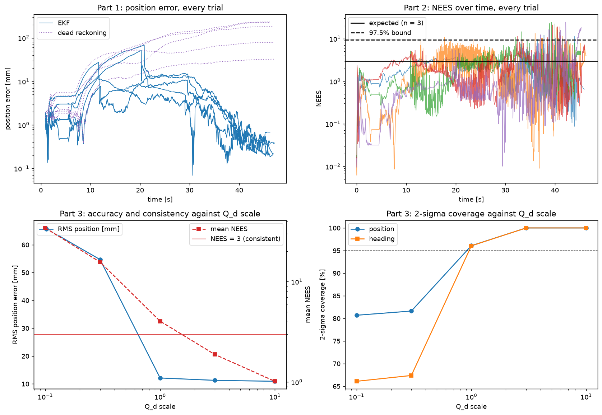

The EKF predict and update functions, \(h_{rb}\) and \(H_{rb}\) (Week 7 C.3–C.5), sequential updates
(Week 7 D.2), NEES and NIS consistency and Qd tuning (Week 7 D.3, D.4), closing the loop on the
estimate (Week 8 B, C), and EKF-SLAM landmark augmentation (Week 7 C).
Code: src/estimation/estimation.py.
Evaluated by python tests/test_estimation.py (add --mission route for the route EKF).
1. The odometry that the filter needs to correct
After the caster fix (A) the simulated wheels rolled without slipping, and dead reckoning stayed within 9 mm over a whole mission. An EKF would have had nothing to correct, so we added the two classic error sources from Borenstein's UMBmark categories to the simulated encoders:
- Systematic: Each wheel's effective radius differs from the nominal 0.033 m, by a different amount on each side (default +0.8% left, −0.4% right, random ±0.8% per trial in the tests), so that the heading drifts.
- Random: slip, a random walk on each wheel angle with variance growing with the angle turned (0.02 rad/√rad) and then quantisation to 4096 ticks/rev.
The robot's software does not ever see these values.
2. EKF design
State \(\mathbf{x} = (x, y, \theta)\) built from the Week 7 functions.
Predict. The exact-arc unicycle \(f\) and its Jacobian \(F\) driven by the encoder odometry measured over the last control period (20 Hz). Week 7 used a constant Qd. We derive Qd instead from the odometry error model - each wheel's distance \(\Delta s\) has variance
\[ \sigma_{\Delta s}^2 = (\sigma_{scale}\,\Delta s)^2 + \sigma_{slip}^2\, r\,|\Delta s| + \sigma_{quant}^2, \qquad \sigma_{scale} = 1\%,\ \ \sigma_{slip} = 0.02\ \text{rad}/\sqrt{\text{rad}}, \]which is mapped onto the pose through the Jacobian \(G\) of \(f\) with respect to the two wheel distances: \(Q_d = k_Q\, G\,\Sigma\,G^T\). Consequentially, a stationary robot gains no uncertainty, and a fast turn gains mostly heading uncertainty.
Update: One ArUco range-and-bearing measurement at a time, with the covariance perception reports for it (B), scaled by \(k_R = (k_\rho, k_\alpha)\). The bearing innovation is wrapped. We made two additions:
- χ² gate on the normalised innovation squared: reject if \(\nu^T S^{-1} \nu > 11.83\) (2 degrees of freedom, 99.7%). It catches outliers such as a mis-identified marker.
- Lock-out recovery (added for criterion E). After an unseen jump such as a push, P is still small, so every correct measurement fails the gate and the filter never recovers. If every marker measurement has been rejected for 5 frames in a row (0.5 s) the filter adds diag(0.3 m, 0.3 m, 30°)² to P and reprocesses the frame. It never fires in nominal missions.
Final tuning: \(k_Q = 3\), \(k_R = (5, 1)\). Explanation to how we got here is in section 5.
3. MarkerSLAM: the explore mission's filter
The explore mission starts with no known pose and no marker map (as required for real hardware) so the filter runs in the reference marker's frame {A} (frames). It differs from the route EKF in four ways.
Initialisation from one marker: The position comes from the marker's PnP pose since range and bearing are accurate. The marker's yaw comes from the LiDAR wall line it hangs on as PnP's yaw suffers the planar ambiguity (B, section 5). The prior covariance is the Jacobian of the pose with respect to (range, bearing, yaw), with \(\sigma_{yaw} = 1^\circ\) from the wall or \(6^\circ\) from PnP. The yaw uncertainty therefore appears as a rotation about the marker. This is exactly the direction one marker cannot observe.
Wall-line heading measurement. One marker never observes the full pose (A, section 5), and near the dock the dock marker is the only marker in view. But when a LiDAR wall line from the same instant passes within 0.15 m of a known marker in view, and agrees with its PnP normal to within 30°, the wall's normal in the robot frame is the marker's facing direction \(\psi\). That direction \(\phi_M\) in {A} is known, so
\[ z = \psi = \phi_M - \theta, \qquad H = [0,\ 0,\ -1], \qquad \sigma = 1^\circ, \qquad \text{gate } \chi^2_1 = 8.81. \]One marker plus its wall observes the full pose. Five rejections in a row, meaning a turn the odometry did not see, trigger the same lock-out recovery. The main loop reads the LiDAR before the camera when both are due, so the wall line and the marker come from the same instant.
EKF-SLAM. Any other marker is added to the state when first seen using the inverse range-and-bearing model and its Jacobians, but only once the dock marker has been seen ("anchored"). When tested, we were able to find the reason. Markers mapped before that are placed from an estimate whose rotation is not yet observed. They later pull the estimate away from the dock marker - in one run, 32 dock-marker measurements were gated out and the robot docked 145 mm off. Mapped markers are dropped when the lock-out recovery fires.
Known landmarks: The reference marker at the origin of {A}, and the dock marker at
DOCK_OFFSET. They use the same Q/R tuning, gate and recovery as the route EKF.
4. Results
Explore mission (5 missions from the default start, seeds 100–104)
| EKF position RMS | 11.3 mm (5.2–22.1 per mission), worst 69 mm |
| Dead reckoning from the same start estimate | 86 mm RMS, up to 232 mm at the end |
| Mean NEES (3 = consistent) | 1.88, NEES under the 97.5% bound on 99% of 4579 steps |
| 2σ coverage, position/heading | 100%/100% |
| Mean NIS (2 expected), gate rejections | 0.55, 0 |
| Wall-line heading updates (one traced mission) | 74, none rejected, mean NIS 0.02 |
Conclusion: Consistent and on the conservative side. The wall update's NIS of 0.02 shows its 1° σ is generous since the wall fit is good to about 0.1°. Week 7 advises remaining conservative when unsure.
Where the error comes from. The worst mission (69 mm) drove from 6 to 21 s with no known marker in view - the dock marker was not detected during "look" from 3.5 m. Its heading drifted 3° on odometry, and the first sighting of the dock marker corrected it to 0.1°. Accuracy is set by how long the robot drives without a known marker. Heading RMS is 0.75°, against 0.1° in the route mission with five known markers.


tests/test_estimation.py, explore mission. Top: position error (EKF against dead
reckoning) and NEES over time in every trial. Bottom: accuracy, mean NEES and 2σ coverage against the
Qd scale, replaying the recorded sensor data.Route mission baseline (known map with 5 known markers, seeds 100–104)
| Trial | Wheel radius errors | EKF RMS | EKF max | DR RMS | DR final |
|---|---|---|---|---|---|
| 0 | +0.54%, +0.15% | 3.5mm, 0.11° | 8.7mm | 119mm, 4.1° | 199mm, 6.3° |
| 1 | −0.34%, −0.73% | 3.2mm, 0.10° | 7.9mm | 85mm, 3.3° | 153mm, 5.3° |
| 2 | +0.76%, +0.15% | 3.3mm, 0.10° | 9.9mm | 140mm, 5.2° | 237mm, 7.7° |
| 3 | +0.46%, +0.66% | 3.1mm, 0.09° | 7.5mm | 33mm, 0.9° | 45mm, 0.9° |
| 4 | +0.30%, −0.50% | 2.2mm, 0.09° | 7.8mm | 135mm, 4.2° | 219mm, 5.8° |
Mean EKF RMS 3.1 mm against 102 mm for dead reckoning (33×); mean NEES 2.71; 2σ coverage 100% and 99%. Dead-reckoning drift follows the difference between the wheel errors, as predicted by UMBMark: trial 3, with a 0.20% difference, drifts 45 mm.
The estimate matters for the task and not just the plot. Steered by dead reckoning, the robot still reaches the dock because docking steers on the camera. But it arrives off the dock marker's normal and docks 78 mm to the side and 13° skewed on the route mission, and 45 mm off on the explore mission. Both fail the 30 mm criterion.
5. Tuning: from overconfident to consistent
The first version (kQ = 1, kR = 1) was accurate with 4.3 mm RMS, but overconfident. Mean NEES was 6.71 against an expected 3. 2σ coverage was 69% for position and 83% for heading, and 29 good updates were rejected by the gate, because a too-small P makes good measurements look like outliers. Using week 7 D.4's knob, scaling Qd, was unable to fix it on its own:
| Q scale (R ×1) | RMS position | Mean NEES | 2σ position | 2σ heading | Rejected |
|---|---|---|---|---|---|
| 0.1 | 32.2mm | 105.90 | 7% | 21% | 1218 |
| 0.3 | 5.0mm | 17.62 | 36% | 54% | 181 |
| 1 | 4.3mm | 6.71 | 69% | 83% | 29 |
| 3 | 4.3mm | 5.07 | 83% | 91% | 24 |
| 10 | 4.8mm | 4.55 | 88% | 91% | 23 |
NEES stayed above 4.5 even at 10×, while NIS on each single measurement looked fine. That pattern points at correlated measurement errors. Splitting NEES by state (position 5.18 against an expected 2, heading 2.02 against 1) located the problem in position. We found two causes:
- Q too small for a bias: The wheel-radius error is a constant bias but the model treats it as fresh noise each step. Over N steps without a marker, the real error grows like N while the model's standard deviation grows only like √N.
- Correlated camera errors: At 10 Hz the camera sees the same marker from almost the same place each frame, with almost the same error, so the filter over-counts the frames. This is evident in the autocorrelation of the same marker's whitened innovations, k frames apart: range +0.33, +0.22 and +0.14 at k = 1, 2, 3, against bearing −0.01, +0.04 and −0.01. Range errors are correlated across frames, while bearing errors are not.
To text fixes, we replayed the recorded sensor data offline:
| Q | R range | R bearing | Frames used | RMS pos | NEES | 2σ pos / heading |
|---|---|---|---|---|---|---|
| 1 | 1 | 1 | every | 4.3mm | 6.71 | 69%/83% |
| 3 | 1 | 1 | every 5th | 5.4mm | 3.09 | 92%/98% |
| 3 | 3 | 3 | every | 4.4mm | 2.55 | 96%/100% |
| 3 | 5 | 1 | every | 4.5mm | 3.01 | 96%/98% |
| 3 | 8 | 1 | every | 4.6mm | 2.64 | 98%/100% |
| 4 | 4 | 4 | every | 4.5mm | 2.09 | 97%/100% |
Decision: kQ = 3, kR = (range 5, bearing 1).
- Q ×3 covers the radius bias over the blind stretches between markers.
- Range ×5 follows the correlated-measurement argument. Errors correlated over about n frames carry about 1/n of a frame's information each, so Reff ≈ nR. An autocorrelation still at +0.14–0.15 three frames on supports n ≈ 5.
- Bearing is left alone because its errors are independent. Inflating it as well only made the filter more conservative.
- Dropping frames instead of inflating R does not fix the first cause and costs accuracy.
Confirmed on the final system: Q ×3 gives NEES 2.71 on the route mission and 1.88 on the explore mission. Q ×1 gives 5.18 and 4.04 (overconfident). Q ×0.1 is catastrophic, with 186 mm RMS and 537 good measurements rejected. Accuracy barely moves anywhere from Q ×1 to ×10 (2.7–3.8 mm on the route); what the tuning buys is consistency.
- Qd derived from a physical wheel error model instead of a constant.
- Tuning driven by a diagnosis (NEES by state, innovation autocorrelation) and justified quantitatively. Offline replay of recorded sensor data made the sweeps exact comparisons.
- A χ² gate and the lock-out recovery required by its failure mode.
- A new measurement, the LiDAR wall-line heading, motivated by the observability analysis. It allows on marker to fix the full pose.
- EKF-SLAM with an anchoring rule found by testing.
- Mean NIS is about 0.5 against an expected 2. With Q ×3 the predicted covariance is generous right after each correction which is the price of covering a bias with white noise. The principled fix is to augment the state with the two wheel-radius errors, x = (x, y, θ, el, er), so the filter learns the robot's calibration. We have not implemented this in our project.
- The tuning is for ±0.8% wheel errors. At ±2.5% (the robustness odometry scenario) the filter becomes overconfident (NEES 25–45) and relies on the lock-out recovery.
- Five missions per configuration. The noise statistics come from the simulator, and real wheels and real camera errors will differ.